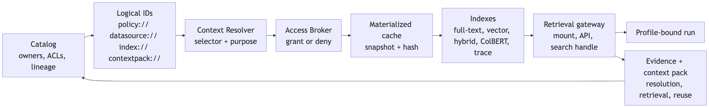
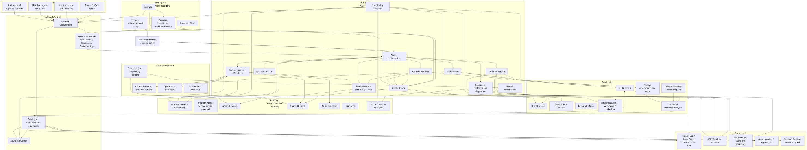

Point32Health Agentic AI
Technical architecture
A reference architecture for governed, reusable agentic applications across profile, catalog, runtime, brokered access, context, evidence, eval, and release planes.
The engineering question: how do every app, agent, worker, and surface share the same control contracts before production?
ProfilesCatalogRuntimeEvidenceRelease gates
BBVA shows why regulated AI adoption needs a managed platform path
Regulated-bank example
BBVA is useful technically because it turned hidden AI demand into a governed path: secure entry, fast approval, observable use, human ownership, and reusable patterns before unmanaged usage became the default.
For Point32Health, the platform implication is concrete: every approved surface should enter through profile, catalog, runtime, broker, resolver, evidence, eval, and release contracts instead of becoming another local exception.
Source: Garicano, Li & Wu, Messy Jobs, ch. 7, “BBVA: escaping pilot purgatory”; user-provided screenshots.
Engineering now has a concrete build sequence
Technical package orientation
The current document package turns the architecture into an executable sequence: intake first, trace capture second, review/archive plus memory seed third, then the first full application proof.
Sources: readmefirst.md, implspec.md Section 21, catalog.md, agent_harnesses.md, evals.md
Uniform Standards
Axis 1
Profiles, catalog records, runtime APIs, bindings, access decisions, evidence events, eval suites, and release gates are the stable surfaces that every implementation plugs into.
ProfileCatalogRuntimeEvidenceBrokerResolverRelease
How An LLM Agent Run Works

Anatomy Of An AI Application

A buildable substrate for governed, reusable agentic applications
Reference architecture
The architecture prevents each application from rebuilding runtime, access, tool governance, evidence, eval, approval, release, and observability primitives. The common substrate lets teams move faster while making the work visible and controllable.
Sources: conceptspec.md, implspec.md, catalog.md, profilespec.md
The platform loop is profile, catalog, runtime, evidence, then the next controlled turn
System loop
Implementation rule
Any UI, batch job, notebook, or external agent client should enter through this loop instead of bypassing profile, catalog, runtime, or evidence contracts.
An agentic application is a governed composition, not just an agent
Application model
Business surface
React app, Teams, portal, call-center console, reviewer workbench, API, batch, notebook, IVR.
Runtime composition
Lead agent, deterministic services, retrievers, tools, typed capabilities, sandbox jobs, approval objects.
Governance envelope
Authority, data class, policies, evidence, evals, observability, release gates, risks, implementation bindings.
composition:
component_policy: single_lead_agent
components:
- synthetic_benefits_domain_agent
- synthetic_plan_document_retriever
- synthetic_eligibility_lookup
- evidence_bundle_writer
- approval_routerProfiles are human-readable contracts and machine-actionable inputs
Profile model
Intent
Business purpose, domain, owners, users, value hypothesis, maturity.
Authority
Surfaces, default authority level, autonomous actions, approval-required actions, prohibited actions.
Runtime
Composition, data, access modes, tools, execution, sandbox, implementation bindings.
Controls
Human review, evidence, evals, observability, security, regulatory, release, operations, risks.
authority:
default_level: L1_DRAFT
access:
access_broker_required: true
ambient_credentials_allowed: false
sandbox:
network_policy: deny_by_default
evidence:
bundle_required: true
evals:
release_gate_required: trueProfile sections map directly to platform behavior
Profile section map
The resolved profile is the typed control document consumed by catalog, validators, provisioning preview, runtime, brokers, resolvers, evidence, evals, release gates, and operational views.
| Decision area | Profile sections | Platform behavior |
|---|---|---|
| Portfolio identity |
metadata, catalog, business, maturity, risks
|
Owner views, value hypothesis, lifecycle state, portfolio filters, risk review. |
| Entry and users |
surfaces, users
|
Allowed UI/API/batch entry points, identity classes, external-facing risk flags. |
| Authority and data |
authority, data, access, tools
|
Autonomous actions, approvals, PHI posture, logical refs, broker grants, tool risk. |
| Runtime shape |
composition, execution, sandbox
|
Lead agent/workflow graph, durable modes, sandbox substrate, network and secrets policy. |
| Human control |
human_in_loop
|
Reviewer roles, approval actions, escalation triggers, edit-and-approve paths. |
| Proof and gates |
evidence, evals, observability, release
|
Required events, artifacts, metrics, eval suites, release gates, rollback readiness. |
| Production readiness |
security, regulatory, operations, implementation_bindings, provisioning
|
Least privilege, HIPAA/docs, runbooks, selected resources, preview/apply jobs. |
Field-level lineage matters: reviewers need to know which values came from the base profile, which were overridden by the app, and which loosened controls need approval.
Source: profilespec.md sections 3-4
Profile fragments show how one schema changes runtime and governance
Profile examples
These authored profiles keep the same base contract but change surfaces, authority, logical IDs, access modes, binding refs, HITL triggers, evidence, and release risk.
metadata.name: benefits_explanation_app authority.default_level: L1_DRAFT data.classification: phi_pii data.sources: - logical_id: datasource://point32health/benefits/prod/plan_documents access_mode: retrieval implementation_bindings: prompt_refs: [prompt://point32health/benefits/prod/domain_agent/default] eval_refs: [eval://point32health/benefits/prod/golden_set/v1] hitl.gates: [formal_determination]
metadata.name: provider_directory_integrity_app surfaces: [ops_dashboard, provider_portal, batch] authority.default_level: L2_RECOMMEND data.classification: confidential data.sources: - logical_id: datasource://point32health/providers/prod/directory access_mode: api_delta_event writeback.mode: approval_required hitl.gates: [provider_removal, network_status]
metadata.name: medical_necessity_review_app component_pattern: multi_agent_application authority.default_level: L2_RECOMMEND data.classification: highly_restricted data.sources: - logical_id: datasource://point32health/clinical/prod/prior_auth_packet access_mode: mounted_snapshot sandbox.egress: deny_by_default hitl.gates: [adverse_determination]
metadata.name: claims_exception_resolution_app surfaces: [claims_workbench, batch_queue] authority.default_level: L2_RECOMMEND data.classification: highly_restricted data.sources: - logical_id: datasource://point32health/claims/prod/pended_claims access_mode: readonly_delta writeback.mode: approval_required hitl.gates: [payment_change, denial, fwa_referral]
When a profile references a logical URL such as datasource://... or prompt://..., the selected concrete binding belongs in the catalog binding registry and release binding set, not in agent code.
Source: profiles.md application-profile examples
Synthetic Benefits shows how a resolved profile drives runtime, broker, resolver, and release controls
Profile deep dive
One project can exercise the full contract without PHI: app identity and authority, component graph, logical data refs, brokered access, context materialization, evidence, evals, and bindings.
metadata.name: synthetic_benefits_navigator_app inheritance.parent: enterprise_healthcare_agent_base maturity.stage: prototype surfaces.allowed_surface_types: [react_app, api, cli, hitl_console] authority: default_level: L1_DRAFT allowed_actions: [retrieve_context, call_tools, draft_response] approval_required_for: [mark_response_as_approved, simulated_send_response] prohibited_actions: [use_real_phi, use_real_member_data, perform_real_writeback]
composition.component_policy: single_lead_agent components: - synthetic_benefits_domain_agent: agent - synthetic_plan_document_retriever: retrieval_service - synthetic_eligibility_lookup: tool - evidence_bundle_writer: service/platform_candidate access: access_broker_required: true default_access_duration: run_scoped ambient_credentials_allowed: false sandbox.network_policy: deny_by_default
data: data_classification: internal logical_reference_required: true sources: - logical_id: datasource://point32health/synthetic/dev/plan_documents type: markdown_document_corpus access_mode: retrieval - logical_id: datasource://point32health/synthetic/dev/accumulators type: csv_table access_mode: database_readonly context_resources: - logical_id: datasource://point32health/synthetic/dev/plan_documents resolver: static_local indexes: [index://point32health/synthetic/dev/plan_documents/fulltext?at=build:1]
human_in_loop.escalation_triggers: [missing_plan_document, conflicting_data, low_confidence] evidence: bundle_required: true required_events: [run_created, profile_resolved, access_decision, context_resolved, retrieval, tool_call, model_call, approval, eval_result] evals: eval_types: [golden_set, citation_fidelity, tool_correctness, refusal, regression] release_gate_required: true implementation_bindings: infrastructure_stack_ref: deploy/infrastructure/dev prompt_registry_refs: [prompts/synthetic_benefits/domain_agent/v0.1] eval_suite_refs: [evals/synthetic_benefits/golden_set/v0.1]
At runtime, these fields become concrete checks: resolve profile, compute broker grants, materialize context, enforce HITL, write evidence, run eval gates, and attach the selected binding set.
Source: profilespec.md Synthetic Benefits overlay and resolved value view
Child profiles declare app-specific facts while inheriting enterprise controls
Profile inheritanceThe resolver should preserve source lineage for each field: inherited, overridden, added, rejected, or accepted as an extension.
The resolved profile is the shared input to control, runtime, and governance services
Contract consumption
Catalog
Pages, panes, lookup names, maturity, owners, risks.
Provisioning
Binding preview, selected resources, approvals, glass links.
Runtime
Run envelope, allowed surface, tools, capabilities, budgets.
Broker/Resolver
Access decision, logical refs, context handles, lineage.
Evidence/Evals
Required events, artifacts, metrics, thresholds, release gates.
source lineage per field:
profile: synthetic_benefits_navigator_app
parent: enterprise_healthcare_agent_base
field_path: access.ambient_credentials_allowed
value: false
resolution: inherited
consumed_by: [runtime, access_broker, security_glass, release_gate]The system must make agentic work visible at portfolio, runtime, and control levels
Visibility
Technical visibility
Profiles, components, tools, APIs, MCP servers, data sources, logical references, prompts, evals, and bindings.
Runtime visibility
Runs, state, context resolution, retrieval, model calls, tool calls, sandbox jobs, outputs, and approvals.
Security visibility
Identity posture, access decisions, PHI/PII exposure, credential exchange, policy versions, exceptions, incidents, and signoff.
| Question | Catalog answer |
|---|---|
| What can this app access? | Profile data section, logical references, access modes, broker policy, binding rows, evidence events. |
| What did this run do? | Run timeline, access decision, context handles, retrieval, tool/model calls, outputs, approvals, eval result. |
| What can be reused? | App-local components, consumers, typed capability candidates, eval/readiness signals, owner and release state. |
The governed runtime binds five surrounding planes during a run
Architecture map

Current figure from conceptspec.pdf
Surfaces normalize user and system entry points into profile-bound runtime calls
Access surface planeAdding a new UI should not create a new security model, evidence model, or tool-access model.
The platform supplies the support stack that every app would otherwise rebuild
Shared substrate
Control
Catalog, profile registry, bindings, provisioning, policies, prompts, eval/release registry.
Runtime
Run lifecycle, durable workflow, capability router, model gateway, tool invocation, approval routing.
Access/context
Access Broker, Credential Broker, Context Resolver, materialization, cache, indexes, retrieval gateway.
Governance
Evidence bundles, traces, observability, cost, evals, release gates, incidents, capability graduation.
ProfilesCatalogBrokerResolverTool registrySandboxHITLEvidenceEvalsObservability
Company memory is a governed index over managed runs and evidence
Durable memory bank
A Teams thread, harness session, product run, batch workflow, or Databricks job should all resolve to the same profile-bound session, evidence, and catalog model so useful work can be inspected and reused later.
| Managed-memory input | System of record | Guardrail |
|---|---|---|
| Harness and chat work | Runtime session + catalog surface refs | Permission boundary and owner review |
| Products and patterns | Profile/catalog registry | Release state and binding set |
| Evidence and lessons | Canonical trace/evidence bundle | Retention, redaction, reuse eligibility |
Project AI helps one team finish a task. Governed company memory preserves the residue of the task so the next team starts from evidence, not a blank prompt.
Sources: catalog.md, agent_harnesses.md, implspec.md, evals.md
Harness Intake Foundation
Intake before app proof
Before the first full application MVP, the platform should prove that employee-used agents can be registered, launched, captured, normalized, redacted, summarized, and reviewed without PHI exposure or broad credentials.
CodexClaude CodeProject IDsRaw tracesCanonical tracesReview queue
Managed agent sessions enter through a launch envelope
Harness runtime
The first runtime slice does not need every application feature. It needs a managed launch context that names the project, run, agent client, allowed data class, instrumentation profile, collector route, and review obligations.
managed_session:
project_ref: project://point32health/platform/dev/agentic_intake_demo
agent_client_ref: agentclient://point32health/platform/dev/codex
instrumentation_ref: instrumentation://point32health/platform/dev/codex-otel-v1
allowed_data_class: internal_non_phi
evidence_required: [raw_trace, canonical_trace, artifacts, reviewer_notes]
ambient_credentials_allowed: falseSources: agent_harnesses.md Sections 8-12, securityspec.md Section 18.1
Raw traces become canonical evidence before they become memory
Trace conversion
The platform should preserve the copied raw trace, but use a canonical trace and evidence record for audit, evals, search, memory review, and catalog promotion.
The memory layer must not treat trace residue as truth by default. Reuse requires classification, redaction, retention, poisoning/staleness checks, and owner approval.
Sources: agent_harnesses.md Sections 10-13, catalog.md Governance Workflows, future_practices.md Section 6
Approved traces seed memory and context, not broad prompt history
Memory seed
The first reusable-memory layer should be deliberately small: project memory files, trace summaries, cache manifests, context-pack candidates, simple BM25/full-text indexes, and draft catalog candidates.
| Trace-derived artifact | Minimum control | Catalog value |
|---|---|---|
| Project memory file | Owner, source trace, retention, sensitivity, unresolved assumptions. | Lets the next run start with reviewed project context. |
| Trace summary | Raw/canonical refs, redaction state, reviewer note, confidence. | Supports audit, search, and human handoff without exposing the full transcript. |
| Cache or context-pack candidate | Source hashes, ACL, allowed profiles, freshness, approval state. | Creates reusable context only when policy allows reuse. |
| Simple index coverage | Source set, build ID, excluded paths, tenant/project scope. | Shows what the prototype can retrieve and what it cannot. |
| Draft catalog candidate | Observed vs inferred vs AI-drafted vs approved fields separated. | Turns repeated work into profiles, prompts, tools, eval cases, or capabilities. |
Sources: catalog.md Prototype-Supporting Catalog MVP, agent_harnesses.md Section 16, evals.md Section 6
The architecture names logical services; the baseline implementation keeps ownership practical
Implementation packaging
17 logical services
Stable platform capabilities exposed to profiles, runtime, provisioning, catalog views, governance, and operations.
8 owned deployables
Initial Point32Health-operated units that host related logical services while using Azure, Databricks, and enterprise managed backends.
The service count should not be read as 17 custom servers. Only rows named HTTP Server in the baseline table are long-lived custom HTTP services.
Source: implspec.md Sections 2.1 and 2.2
Eight baseline units define ownership for the first controlled implementation
Owned implementation units| Unit | Main responsibility |
|---|---|
| Catalog and Glass HTTP Server | Registries, profile resolution, approvals, release/eval records, provisioning preview, role-aware UI. |
| Agent Runtime HTTP Server | Run lifecycle, durable session state, orchestrator handoff, sandbox dispatch, kill switch. |
| Access and Credential Broker HTTP Server | Policy decision, token/session exchange, run-scoped credential/cache policy. |
| Context and Retrieval HTTP Server | Logical ID resolution, context-pack resolution, retrieval handles, lineage. |
| Evidence and Observability Writer HTTP Server | Canonical append API for evidence, trace, cost, observability, and imported summaries. |
| Worker, Sandbox, Tool/API/MCP Pack | Queued work, isolated execution, and gateway-backed tool/API/MCP wrappers. |
HTTP servers validate and enqueue; workers perform long-running work
Execution boundaryQueue payloads carry logical IDs, handles, policy versions, run IDs, and idempotency keys. They do not carry reusable secrets or raw PHI payloads.
The catalog is where profile intent, binding choices, runtime evidence, and governance posture meet
Catalog core

Catalog URLs are the routing contract between profiles, harnesses, resolvers, bindings, and evidence
Logical reference contract
Services exchange logical references instead of physical paths, endpoints, or vendor IDs. The catalog, runtime, harness intake, broker, and resolver choose the approved binding for the caller, profile, environment, release, and policy state.
project://app://agentclient://instrumentation://hook://collector://rawtrace://traceimport://run://trace://review://reviewevent://artifact://datasource://index://contextpack://prompt://eval://release://glass://
<scheme>://point32health/<domain-or-platform-area>/<environment>/<object-path>?<selector>
prompt://point32health/benefits/prod/domain_agent/default?at=stage:approved
datasource://point32health/benefits/staging/plan_documents?at=snapshot:2026-06-01
eval://point32health/benefits/prod/golden_set/v1
trace://point32health/benefits/prod/run_abc123/evidence
project://point32health/platform/dev/agentic_intake_demo
agentclient://point32health/platform/dev/codex
rawtrace://point32health/platform/dev/codex/session/native_session_123
traceimport://point32health/platform/dev/codex-hook-normalizer-v1
review://point32health/platform/dev/research/run_20260813_001/spec-review
reviewevent://point32health/platform/dev/research/run_20260813_001/spec-review/cmt_03
artifact://point32health/platform/dev/research/run_20260813_001/reviews/spec-review| Segment | Platform behavior |
|---|---|
scheme
|
Selects object family: project, app, agent client, instrumentation, hook, collector, raw trace, trace import, run, trace, review, feedback event, artifact, data, index, context pack, prompt, eval, release, glass. |
area
|
Finds owner domain, platform service, policy scope, and portfolio grouping. |
environment
|
Chooses dev, staging, or prod binding set and permission posture. |
selector
|
Pins version, stage, snapshot, build, release, commit, or timestamp. |
Resolver outputs include the physical handle, policy version, binding row, snapshot or artifact hash, and evidence reference needed for replay and audit.
Sources: catalog.md Universal Logical References, implspec.md Section 7.1, agent_harnesses.md Sections 10-12
POST /runs is the main entry point for access surfaces
Runtime planePOST /runs
{
"application_profile": "synthetic_benefits_navigator_app",
"surface": "benefits_demo_react_app",
"user_context": {"roles": ["benefits_sme"]},
"task": {"type": "benefits_question"},
"requested_outputs": ["answer", "citations", "limitations"]
}Review surfaces give HITL a richer runtime contract
Review object model
The same HITL mechanism should expose Markdown specs, output drafts, static HTML bundles, live reviewer apps, eval reports, and external glass views through catalog-owned endpoints.
review://point32health/benefits/dev/run_abc123/spec-review
app://point32health/benefits/dev/hitl/run_abc123/spec-review
hitl://point32health/benefits/dev/run_abc123/review/spec-review
reviewevent://point32health/benefits/dev/run_abc123/spec-review/cmt_03
artifact://point32health/benefits/dev/run_abc123/reviews/spec-review| Backing mode | Use it for | Archive |
|---|---|---|
| Markdown/spec review | Plans, specs, rubrics, release notes. | Source, rendered HTML, feedback manifest. |
| Static HTML artifact | Generated sites, dashboards, browser-test replays. | Asset bundle, hashes, screenshot, feedback. |
| Live HITL app | Temporary reviewer UI, prototype, eval workbench. | Static export where possible; screenshot/HAR/log manifest otherwise. |
| External glass | Azure, Databricks, Foundry, Purview, GitHub, SharePoint views. | External ID/URL, synced status, local decision evidence. |
Generated HTML is useful but untrusted: sandboxed frame, strict CSP, no ambient credentials, signed expiring access, hash checks, and scans before agent reuse.
The catalog can be operational without becoming a shadow admin portal
Glass behavior
Reads through owners
Provider APIs, platform APIs, telemetry exports, event imports, and external glass links.
Writes through workflows
Typed platform APIs, provisioning compiler, policy API, approval API, and provider drivers.
Stores evidence
Action request, actor, policy version, binding row, provider resource, result, rollback or revocation handle.
| Action | Write path | Catalog record |
|---|---|---|
| Provision resource | Preview, approval, queued worker, provider driver | Plan, job ID, resource IDs, links, rollback |
| Disable tool/model route | Runtime/API gateway/model policy driver | Actor, reason, affected releases, evidence |
| Launch eval/red-team run | Eval control API, queued worker, Foundry/MLflow driver | Dataset, job ID, results, gate impact |
A relational registry spine makes lookup, lineage, versioning, and promotion practical
Registry model
| Core table | Purpose |
|---|---|
| registry_objects | Governed object by type, key, owner, risk, status. |
| registry_object_versions | Immutable profile, prompt, policy, schema, tool, binding, release versions. |
| registry_relationships | Typed graph across apps, tools, data, policies, releases, evidence. |
| registry_bindings | Concrete implementation rows by provider, environment, resource. |
| registry_events | Append-only audit trail for create, approve, select, provision, sync. |
Why relational first
Owners, releases, approvals, versions, policy assignments, evidence links, and external glass links need joins, constraints, and version history. Large artifacts can live in ADLS/Blob/Delta.
Evidence Traces
Axis 2
The platform records who asked, what profile and release were used, which access was granted, which context was retrieved, which tools and models ran, who approved, which evals passed, and what artifacts were produced.
Run timelineAccess envelopeContext lineageGuardrail eventsEval resultsAudit export
The evidence bundle must reconstruct the run without trusting the agent's memory
Evidence schema
Run identity
Human/caller, app, surface, capability, workload identity, environment, release, approval state, run ID.
Control events
Profile resolution, policy decision, credential/handle exchange, context resolution, guardrail result, eval gate.
Artifact lineage
Snapshots, indexes, prompts, model routes, tool calls, outputs, hashes, storage refs, raw/redacted state.
| Evidence use | Required behavior |
|---|---|
| Audit and compliance | Export chain of custody, policy versions, reviewer decisions, source links, retention and legal-hold state. |
| Debug and replay | Recover the exact profile, release, context handle, prompt/config, model route, tool path, and output artifact. |
| Reuse and evals | Separate raw trace, redacted trace, eval case, optimizer input, and memory artifact with distinct approvals. |
Reuse And Cooperation
Axis 3
Profiles, inherited controls, typed capabilities, bounded subagents, tool registries, and approved handoffs let teams cooperate while preserving scope, budget, authority, and evidence.
Profile inheritanceTyped capabilitiesSubagentsHandoffsTool registry
Synthetic Benefits is the first full application proof after intake works
Full app proof
Why it comes after intake
The intake spine proves run identity, trace capture, canonical evidence, review state, and memory candidates first. Synthetic Benefits then exercises the full app path without PHI or source-system writeback.
ProfilesBrokerResolverRetrievalHITLEvals
Sources: prototype.md, catalog.md Prototype-Supporting Catalog MVP, implspec.md Phase 2
Reusable capabilities are invoked through typed contracts, not arbitrary agent conversations
Composability
Bad control protocol
Benefits Agent asks Claims Agent in natural language what happened with a claim, inheriting unclear context and authority.
Good control protocol
Benefits app invokes claims.accumulator_explanation@v1 with validated inputs and receives typed outputs plus evidence refs.
capability:
name: claims.accumulator_explanation
allowed_callers: [benefits_explanation_app, claims_exception_resolution_app]
input:
member_ref: scoped_member_id
plan_year: integer
claim_refs: list[claim_ref]
output:
answer: markdown
accumulator_events: list[accumulator_event]
evidence_refs: list[evidence_ref]Subagents are allowed when their scope, tools, context, budget, and evidence are explicit
Delegation modelRecursive delegation deeper than one level stays watchlist until depth, cost, termination, handoff validation, and trace-inspection controls are mature.
App-local components become shared capabilities only after they earn it
Reuse pathLikely graduates: evidence bundle writer, approval router, access broker, context resolver, retrieval/index gateway, document understanding, provider identity resolution, Delta table query tool.
Tools are registered, risk-scored, allowlisted, versioned, routed, and evidenced
Tool governance| Registry field | Why it matters |
|---|---|
| allowed_callers | Prevents broad reuse outside approved profiles. |
| operation_contract | Validates input/output and supports SDK/schema generation. |
| evidence_hook | Ensures tool use appears in run evidence and release review. |
Security And Compliance
Axis 4
The platform composes identity, brokered access, sandboxing, PHI controls, compliance signoff, environment, release state, approval, and evidence before access or promotion.
No ambient credentialsAccess envelopeCredential brokerPrompt/tool guardrailsCompliance signoff
Every material run joins the identities and controls needed for one bounded task
Identity model
Caller
Human, service job, app identity, allowed surface, role facts.
Profile
Application, capability, authority level, tool policy, release state.
Resource
Data source, context pack, index, tool, MCP route, model route, artifact.
Environment
Dev, synthetic, staging, production, regulated workspace, data-side execution.
Evidence
Run ID, policy version, access decision, approval basis, retention state.
identity root + RBAC facts + profile policy + purpose + data classification
+ approval state + environment + release state
-> access decision
-> short-lived credential or handle
-> evidenced useThe broker turns identity facts into run-scoped authorization
Access broker
Who
User, app identity, surface, service principal, group.
What
Profile, capability, tool/API/MCP operation, data source.
Why
Purpose, task, environment, maturity, release state.
Risk
Data class, PHI/PII, writeback, high-impact action, external comms.
State
Approval, exception, policy version, TTL, evidence obligations.
{
"decision": "grant",
"granted_mode": "mounted_snapshot",
"scope": {"document_id": "doc-456", "version": "v12", "mode": "read_only"},
"expires_at": "2026-06-03T15:05:00Z",
"policy_ref": "access/sharepoint_contract_readonly.policy.yaml"
}Agents receive handles and artifacts; credentials stay inside platform boundaries
Credential boundary
Allowed exchange outputs
OBO delegated token server-side, managed identity call, signed URL, retrieval handle, read-only snapshot, MCP session.
Disallowed exposure
Prompts, traces, queues, context cache, semantic cache, and agents must not receive broad reusable credentials.
Broker cache stance
Only encrypted, scoped, TTL-bound, revocable, evidenced, and broker-internal when performance requires it.
Credential cache, semantic cache, context/materialization cache, queue state, and trace/evidence stores are separate security domains.
Point32Health policy composes enterprise identity and cloud-specific controls
Identity and authorization

Current figure from identity_auth_layers.pdf
Every material run routes through identity, profile policy, brokered access, workers, tools, and evidence
Security flow

Runtime
Creates run envelope before source access.
Catalog
Supplies profile, policy, release, binding, approval facts.
Broker
Grants, denies, scopes, exchanges, and logs access.
Evidence
Platform services write audit events instead of trusting agent self-logging.
Untrusted content may inform answers, but it must not become operational authority
Guardrail stack
Source controls
Label retrieved chunks, trace memory, tool responses, uploads, and context packs by trust, data class, owner, lineage, and reuse eligibility.
Action controls
Run prompt/document attack detection, task-adherence checks, tool gates, model/output inspection, and red-team evals.
Escalation controls
Block, redact, route to reviewers, or require exception records depending on environment, data, tool, and impact.
Guardrail evidence records detector/evaluator version, mode, decision, severity, policy version, source/context IDs, route, reviewer target, and release gate consumed.
Sandbox jobs and external agent clients run as controlled execution workloads
Execution plane
Inputs
Explicit artifacts, context handles, allowed tools, run-scoped credentials only when unavoidable.
Runtime policy
Signed images, deny-by-default egress, resource limits, timeout/kill policy, ephemeral filesystem.
Outputs
Artifact-only outputs, evidence hooks, log redaction, cleanup, telemetry import for external clients.
sandbox:
required_for: [document_ingestion, chunking, index_building]
substrate: local_docker_then_container_apps
network_policy: deny_by_default
filesystem_policy: ephemeral_only
secrets_policy: broker_injected_short_lived
image_policy: signed_images_requiredSystem staging must fail closed when required evidence or signoff is missing
Release gate
Evidence required
Profile, release, prompt, model, data, tool, broker, guardrail, eval, approval, retention, and rollback versions.
Human approval
Writeback, external communication, clinical, financial, adverse, regulatory, exception, and PHI reuse paths need role-qualified review.
Promotion blockers
Unresolved high-risk findings, missing guardrail evidence, unclear redaction posture, unowned exceptions, or untested incident paths.
| Reviewer function | Decision scope |
|---|---|
| Data and source owners | Classification, minimum necessary access, lineage, reuse permission, source constraints. |
| Security, IT/IAM, platform | Identity, broker posture, gateways, sandbox, monitoring, revocation, route controls. |
| Compliance, privacy, RAI, operations | PHI handling, auditability, eval adequacy, residual AI risk, rollback, incident readiness. |
Environment is part of the contract, so promotion cannot hide inside app code
Release control
The catalog stores selected binding rows for each profile version, environment, and release. URLs and logical IDs make dev, staging, and production token prod explicit; release gates record what passed before promotion.
Dev
Local or synthetic bindings, schema validation, smoke evals, evidence event coverage, and prototype owner approval.
…/dev/…
Staging
Production-like bindings, broker policy, guardrails, HITL routing, regression evals, runbook, and rollback rehearsal.
…/staging/…
Production
Approved release version, immutable binding set, monitoring, incident hooks, kill switch, and catalog-visible rollback target.
…/prod/…
environment: staging
logical_id: datasource://point32health/synthetic/staging/plan_documents
binding_set: release-binding-set://synthetic-benefits/staging/v3
release_gate: release-gate://synthetic-benefits/promote-to-production
gate_requires: [eval_pass, approval, broker_policy, evidence_trace, rollback]Sources: catalog.md lookup/binding model, release page, governance workflows
HITL And Easy Evals
Axis 5
The platform turns human review, guardrail results, eval suites, audit export, exceptions, and rollback readiness into reusable release-gate machinery.
Qualified reviewersFail-closed gatesAudit exportRed-team scansRollback
Evals start with harness capture, then move to application behavior
Evaluation path
The first eval question is whether the platform can capture and normalize managed agent work. The second is whether Synthetic Benefits answers safely and with evidence. Foundry and other tools are useful backends, while the catalog remains the release record.
| Eval layer | What it checks | Gate before moving on |
|---|---|---|
| Harness capture evals | Prompt, context, files touched, tool calls, artifacts, review surfaces, feedback events, archive manifests, cost/error/completion state. | Run, project, agent-client, raw-trace, canonical-trace, evidence, and redaction state are present. |
| Trace-memory evals | Approved summaries, memory files, cache records, context-pack candidates, and BM25/full-text index records. | Observed, inferred, AI-drafted, and approved catalog facts are clearly separated. |
| Synthetic Benefits local suite | 15-25 benefits questions, answer accuracy, citation fidelity, retrieval completeness, refusal, tool correctness, no PHI leakage. | Release gate blocks unsupported writeback, missing citation, PHI leakage, or critical answer failure. |
| Foundry bridge | Eligible case export, Foundry evaluator runs, row results, local/human comparison, external links. | Catalog stores the lineage and decides which external evals are advisory or gating. |
Source: evals.md Section 6
Runs become promotable only when evidence and evals support the release state
Governance planeThe catalog connects these views so technical debugging, security review, compliance audit, and executive visibility use the same underlying evidence record.
User Simplicity And Future Readiness
Axis 6
Users should get stable, compliant workflows while context memory, subagents, managed-agent platforms, optimization, and adaptive learning evolve behind catalog-visible controls.
No technical burden on usersExperiment recordsOptimizer artifactsRedacted tracesPromotion gates
Context Memory And Trace Reuse
Technical deep dive
The future-practices work makes context packs, hybrid retrieval, trace-derived memory, and compaction first-class catalog artifacts with lineage, ACLs, retention, validation, and reuse rules.
Logical IDsHybrid retrievalContext packsCompactionTrace-derived memory
Profiles and runs use logical references; resolver services select approved physical context
Context contract

data:
sources:
- logical_id: datasource://point32health/synthetic/dev/plan_documents
context_resources:
- logical_id: datasource://point32health/synthetic/dev/plan_documents
materialized_snapshot: snapshot://synthetic-benefits-demo/plans/v1
indexes:
- index://point32health/synthetic/dev/plan_documents/fulltext?at=build:1Context work must preserve lineage, policy, and evidence across derived artifacts
Data and context plane| Required metadata | Why |
|---|---|
| source hash or selector | Reproducibility and audit. |
| ACL and data class | Minimum necessary and policy enforcement. |
| chunk/index policy | Retrieval quality and release-gate comparison. |
| evidence refs | Run trace and compliance review. |
Memory artifacts need separate IDs, approvals, retention rules, and eval gates
Future-ready memory
Context packs
Catalog artifacts with logical ID, owner, source versions, allowed profiles, sensitivity labels, freshness rules, and expected citations.
Compaction
Derivative summaries with source refs, unresolved decisions, constraints, omitted-context warnings, validation status, and replay links.
Trace memory
Reusable memory only after redaction/de-identification, permissioning, retention review, poisoning checks, and revocation support.
| Artifact | Governance rule |
|---|---|
| Raw trace | Canonical evidence; access stays limited to approved review and audit audiences. |
| Redacted trace or eval case | Derivative artifact with its own classification, allowed consumers, hash, and approval basis. |
| Reusable memory | Never treated as self-evidently true; must link to sources and pass stale-policy, PHI leakage, and overgeneralization tests. |
Every future-practice experiment should be catalog-visible before it influences a release
Adoption control
Required experiment fields
Hypothesis, affected profile, data class, baseline, evaluation suite, evidence artifacts, promotion gate, rollback target, owner, and allowed environments.
External traces from OpenAI, Azure, Databricks, MLflow, or other tools can be useful, but the catalog remains the enterprise record.
| Practice | Initial stance |
|---|---|
| Subagents and goal loops | Bounded internal work with stop conditions, budgets, and parent/child evidence. |
| Context packs and compaction | Ready for prototype when source-linked, validated, and policy controlled. |
| Trace-derived memory | Only after redaction, approval, retention review, and poisoning/staleness tests. |
| Managed agent platforms | Use where useful, mirror essential trace/eval records into the catalog. |
Optimizers and learned policies propose candidates; they do not update production directly
Optimization and learning
Prompt/program optimization
Manual prompts, DSPy/MIPROv2, GEPA, and similar optimizers run offline against approved benchmark corpora.
Safe RL-like targets
Start with routing, retrieval selection, prompt/template selection, tool retry policy, delegation policy, and reviewer queue routing.
Release controls
Candidate artifacts need owners, metrics, safety results, human review where required, rollback targets, and evidence links.
optimization_record:
baseline_release: benefits_prompt@v3
optimizer: GEPA_or_MIPROv2
inputs: [approved_benchmark, redacted_trace_snapshot]
gates: [citation_fidelity, PHI_leakage, prompt_injection, cost, latency]
promotion: reviewer_approved_release_artifactBuild Roadmap
Technical roadmap
The implementation path starts with harness intake and trace-fed memory, proves the first full application with Synthetic Benefits, then hardens through document workflows, payer pilots, shared capabilities, and production controls.
Harness intakeTrace memorySynthetic proofDAIS/docsPayer pilotsProduction hardening
Build the intake spine first, then harden through application proofs
Build pathOpen decisions stay concrete: run identity schema, enterprise role mapping, credential TTLs, break-glass chain, provisioning schema, Databricks handoffs, security glass screens, mandatory evidence schema, and production release gates.
Source: implspec.md Section 21 and securityspec.md Section 18
A River-like operating model follows from governed run residue
AI-native expansion
The technical platform earns a River-like operating model only when useful run residue can be promoted into governed memory, context packs, prompts, eval cases, tools, capabilities, decisions, and lessons without bypassing policy.
| Reusable asset | Promotion gate | Reuse boundary |
|---|---|---|
| Prompt or context pack | Owner approval + eval evidence | Profile, role, data class, retention |
| Capability or tool path | Risk score + broker policy | Scoped invocation, not ambient credential |
| Lesson, exception, or incident | Review outcome + control update | Catalog-visible, privacy-filtered memory |
Sources: riverness.md, agent_harnesses.md, catalog.md, securityspec.md, evals.md
Azure-first implementation with Databricks for lakehouse, Unity Catalog, MLflow, and data-side execution
Appendix figure

Current figure from implspec.pdf
Base profile excerpt: inherited enterprise controls
Appendix YAML
api_version: agentic.p32h/v0.1
kind: AgenticApplicationProfile
metadata:
name: enterprise_healthcare_agent_base
catalog:
visibility:
value: catalog_visible
executive_summary_required:
value: true
engineering_view_required:
value: true
authority:
default_level:
value: L1_DRAFT
approval_required_for:
value: [source_system_writeback, external_communication, adverse_action,
payment_change, clinical_determination, pricing_decision, regulatory_filing]
access:
access_broker_required:
value: true
ambient_credentials_allowed:
value: false
evidence:
bundle_required:
value: true
evals:
required:
value: true
release_gate_required:
value: trueSynthetic Benefits resolved value view: app-specific controls
Appendix YAML
metadata:
name: synthetic_benefits_navigator_app
lifecycle_status: prototype
inheritance:
parent: enterprise_healthcare_agent_base
surfaces:
allowed_surface_types: [react_app, api, cli, teams, hitl_console]
authority:
default_level: L1_DRAFT
autonomous_actions_allowed: [retrieve, summarize, explain_plan_language, draft_response]
prohibited_actions: [use_real_phi, use_real_member_data, perform_real_writeback]
data:
data_classification: internal
sources:
- logical_id: datasource://point32health/synthetic/dev/plan_documents
- logical_id: datasource://point32health/synthetic/dev/eligibility
- logical_id: datasource://point32health/synthetic/dev/accumulators
access:
allowed_access_modes: [database_readonly, mounted_snapshot, api]
writeback_default: disabled
evidence:
required_events: [run_created, profile_resolved, access_decision, context_resolved,
snapshot_or_cache_selected, index_selected, retrieval, tool_call, model_call,
output_artifact, approval, eval_result]Runtime payload pattern: profile-bound run creation
Appendix JSON
{
"application_profile": "dais_contract_redlining_app",
"surface": "dais_react_app",
"user_context": {
"user_id": "user-123",
"roles": ["legal_reviewer"]
},
"task": {
"type": "contract_redline",
"description": "Review contract against approved clause policy"
},
"artifacts": [{
"type": "sharepoint_document",
"document_id": "doc-456",
"version": "v12"
}],
"requested_outputs": ["redlined_docx", "clause_summary", "risk_summary"]
}Source: implspec.md Section 8.2
Minimum evidence timeline for a runtime-connected catalog
Appendix schema
run_created
profile_resolved
catalog_lookups_resolved
implementation_bindings_selected
surface_validated
managed_session_launched / trace_imported
access_decision
context_resolved
snapshot_or_cache_selected
index_selected
context_pickup_decision
retrieval
tool_call
agent_runner_started / agent_runner_completed
model_call or mock_model_call
output_artifact
approval_requested
approval_decision
eval_result
run_completedSource: catalog.md Prototype Run Timeline and Governance Workflows
Decisions to close before controlled pilot and production
Appendix decisions| Decision | Why it matters |
|---|---|
| Run identity schema | Determines evidence fields, policy evaluation, and incident review. |
| Enterprise role mapping | Maps Entra groups, app roles, Azure RBAC, Databricks roles, and Unity grants into policy facts. |
| Credential TTL classes | Balances performance, revocation, audit, and source-system risk by environment and data class. |
| Prompt/tool injection gates | Defines release-blocking tests for exfiltration, unsafe action, PHI leakage, and hallucinated citations. |
| Security glass screens | Defines which controls are read-only, queued actions, or approval-required provider-side effects. |
| Provisioning schema | Makes environment, binding policy, generated resources, approvals, and external links explicit in profiles/catalog. |
Old Slides For Review
Second appendix
These slides were removed from the main technical flow during the intake-first refresh. Keep them here for inspection before deletion or selective pull-back.
Engineering Needs One Platform
Managed platform rationale
Because every implementation should share the same runtime, access, evidence, memory, compliance, HITL, eval, and release contracts before it reaches production.
Sources: securityspec.md, future_practices.md, implspec.md, catalog.md
Synthetic Benefits exercises the full architecture with safe synthetic data
Prototype proof
Question path
User asks whether physical therapy is covered for a synthetic member and what the likely cost is with a selected provider.
Plan docsEligibilityAccumulatorsProvider directoryBenefit config
Build Roadmap
Technical roadmap
The implementation path starts with the executable platform slice, proves the full loop with Synthetic Benefits, then pilots real workflows with stronger security, compliance, eval, and evidence gates.
FoundationSynthetic proofControlled pilotsProduction hardening
Build the smallest executable platform slice, then harden through pilots
Build pathOpen decisions: enterprise role mapping, credential TTLs, provisioning schema, Databricks handoffs, security glass screens, mandatory evidence schema, production release gates.
Riverbed makes the runtime an AI-native organization substrate
Riverbed addition
The runtime, broker, resolver, catalog, evidence store, and eval workbench are the Riverbed: the governed layer where useful run residue becomes reusable system capability.
| Riverbed asset | Promotion gate | Reuse boundary |
|---|---|---|
| Prompt or context pack | Owner approval + eval evidence | Profile, role, data class, retention |
| Capability or tool path | Risk score + broker policy | Scoped invocation, not ambient credential |
| Lesson, exception, or incident | Review outcome + control update | Catalog-visible, privacy-filtered memory |
Sources: riverness.md, agent_harnesses.md, catalog.md, securityspec.md, evals.md